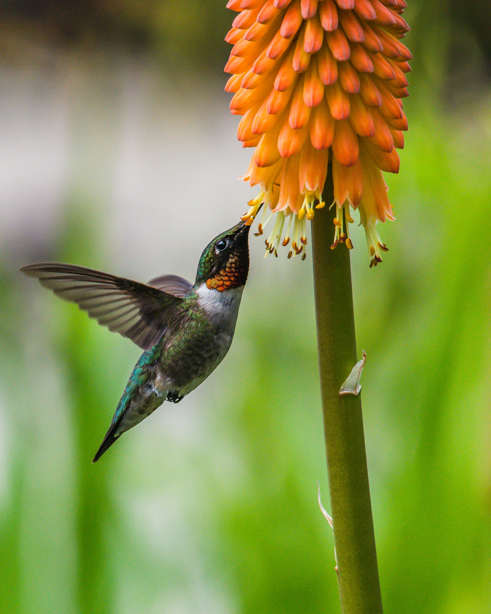
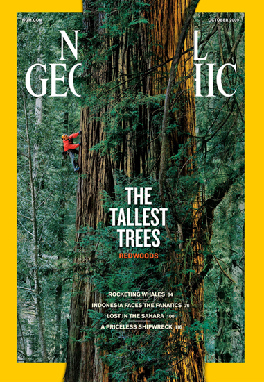
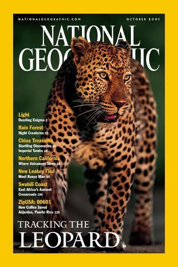
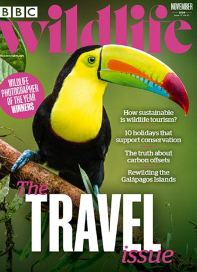
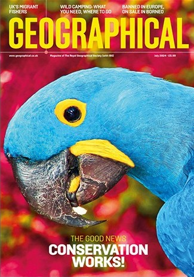

Project Overview
This project simulates a professional National Geographic magazine cover featuring a hummingbird in motion. The goal was to create a commercial-quality editorial design that fits the publication's visual language while demonstrating advanced Photoshop compositing, retouching, and selection work.
Source Photography
The original hummingbird photo served as the foundation for the cover. I used the image because it already had strong motion, natural color, and a clear subject, which made it suitable for a publication-style wildlife cover.

Visual Direction
The concept focuses on the hidden geometry behind a hummingbird's impossible grace. The final design uses a single dramatic wildlife subject, natural color, minimal supporting text, and the iconic yellow border associated with National Geographic-style editorial design.
Subject
A hummingbird frozen in motion to emphasize precision, movement, and natural engineering.
Palette
Deep greens, warm oranges, emerald tones, and a strong yellow editorial frame.
Typography
Serif-driven magazine styling with restrained hierarchy and minimal supporting copy.
Mood
Scientific, elegant, cinematic, and focused on the beauty of natural motion.


Reference Images
I studied wildlife and editorial magazine covers that use strong subject isolation, limited text, natural color palettes, and dramatic image placement. These references helped guide the cover’s composition, hierarchy, and use of the subject breaking outside the frame.

BBC Wildlife: Toucan Cover
Strong subject isolation with minimal background distraction.

Geographical Magazine: July 2024
Single striking image, natural palette, restrained headline layout.
Technical Approach
I refined the image using non-destructive Photoshop techniques, including layer masks, adjustment layers, Smart Object workflow, selective color adjustments, Curves, Vibrance, and controlled vignette effects. The goal was to improve focus and impact without making the image feel artificial.
Selections
Refined the hummingbird and wing edges using masks and careful edge control.
Retouching
Cleaned distractions and improved tonal balance with Healing Brush, Clone Stamp, and adjustment layers.
Compositing
Balanced subject, flower, background, vignette, border, and typography into one cohesive cover.
Print Setup
Prepared layered PSD, flattened JPEG, and print-ready PDF deliverables.
Challenges and Solutions
Color Balance
The image needed to stay vibrant without becoming oversaturated, so I used subtle Curves, Vibrance, and Hue/Saturation adjustments.
Edge Realism
The wings required careful masking so the motion blur and feather detail still looked believable.
Focus Control
I added a controlled vignette inside the image area to guide attention toward the bird without darkening the yellow border.
Editorial Hierarchy
The type had to support the image without overwhelming it, so I kept the layout minimal and focused.
Final Result
The final cover presents the hummingbird as a strong editorial subject while using typography, color correction, image refinement, and layout choices to create a believable National Geographic-inspired magazine cover.
Tools Used
Software
- Adobe Photoshop
- Adobe Acrobat
Workflow
- Layer Masks
- Adjustment Layers
- Smart Objects
Editing
- Curves
- Vibrance
- Hue/Saturation
- Clone Stamp
- Healing Brush
Production
- 300 PPI
- CMYK PDF
- sRGB JPEG
- Print Layout